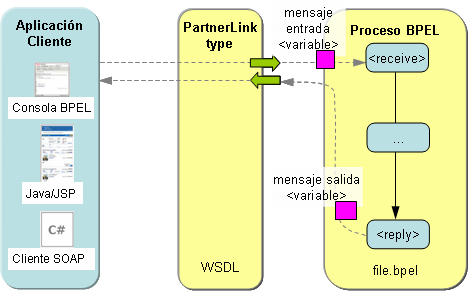
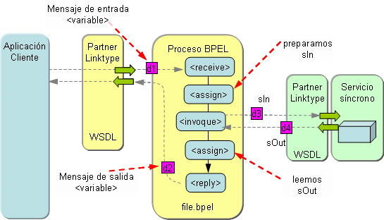
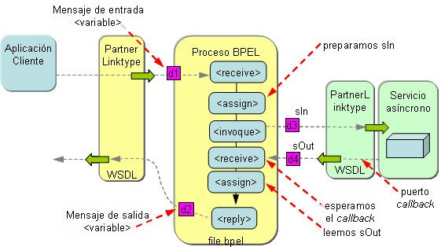

Procesos BPEL síncronos y asíncronos
Uno de los requerimientos técnicos importantes a tener en cuenta cuando se diseñan procesos de negocio que implican la ejecución de múltiples servicios Web que se ejecutan durante periodos largos de tiempo, es la capacidad de poder invocar servicios de forma asíncrona.
La invocación de servicios de forma asíncrona es vital para alcanzar la fiabilidad, escalabilidad, y adaptabilidad requeridas hoy en día en entornos IT (Information Tecnology). Mediante un soporte asíncrono, un proceso de negocio puede invocar servicios Web de forma concurrente (en lugar de secuencialmente), de forma que se mejora el rendimiento. Por ejemplo, un sistema de compras podría necesitar interactuar con múltiples servicios Web de suministradores al mismo tiempo, para así buscar el suministrador que le ofrezca el precio más bajo y la fecha de entrega más temprana. Este soporte asíncrono para servicios Web puede conseguirse mediante técnicas de correlación
En esta sesión nos centraremos en la invocación de servicios Web de forma asíncrona utilizando BPEL, y veremos algún ejemplo.
Procesos BPEL síncronos frente a procesos BPEL asíncronos
Los procesos BPEL difieren en el protocolo de intercambio de mensajes. Un proceso BPEL síncrono es aquel que devuelve al cliente los resultados de procesamiento de forma inmediata. El cliente se bloquea hasta que los resultados son devueltos. El proceso BPEL tendrá una operación de tipo request-response. Este tipo de proceso típicamente sigue la siguiente lógica y sintaxis:
<!-- Estructura de un proceso BPEL síncrono -->
<process>
<receive partnerLink="pLinkA" portType="portA"
operation="opA" variable="invarA">
...... realizar procesamiento ......
<reply partnerLink="pLinkA" portType="portA"
operation="opA" variable="outvarB">
</process>
La Figura 1 muestra gráficamente la estructura de un proceso BPEL síncrono:

Para que un proceso BPEL sea síncrono, todos los servicios Web a los que invoca tienen que ser también síncronos. La Figura 2 muestra un ejemplo de una invocación a un servicio Web síncrono.

Podemos utilizar un proceso BPEL asíncrono en un escenario en el que el calcular los resultados conlleva mucho tiempo. Cuando utilizamos un proceso BPEL asíncrono, es necesario que el cliente no se quede bloqueado en la llamada. En su lugar, el cliente implementa una interfaz callback y una vez que los resultados están disponibles, el proceso BPEL simplemente realiza una invocación callback sobre el cliente.
Una situación en la que podemos utilizar un proceso BPEL asíncrono es por ejemplo cuando los servicios Web subyacentes que tienen que ser orquestados son asíncronos. Este tipo de procesos típicamente sigue la siguiente lógica y sintaxis:
<!-- Estructura de un proceso BPEL asíncrono -->
<process>
<receive partnerLink="pLinkA" portType="portA"
operation="opA" variable="invarA">
...... realizar procesamiento que consume mucho tiempo ......
<!-- Realizar una invocación sobre el cliente para devolver los resultados -->
<invoque partnerLink="pLinkA" portType="callBackportA"
operation="opCallBackB" variable="outvarB">
</process>
La Figura 3 muestra gráficamente un proceso BPEL asíncrono (el proceso BPEL realiza una llamada a un servicio asíncrono):

Correlations
A diferencia de los servicios web, que son un modelo sin estado, los procesos de negocio requiere el uso de un modelo con estado. Cuando un cliente inicia un proceso de negocio, se crea una nueva instancia. Esta instancia "vive" durante la ejecución del proceso de negocio. Los mensajes que se envían a un proceso de negocio (utilizando operaciones sobre los port types y ports) necesitan ser entregados a la instancia correcta de dicho proceso de negocio. BPEL proporciona un mecanismo para utilizar datos específicos del negocio para mantener referencias a instancias específicas del proceso de negocio. A esta característica la denomina correlación (correlation). En definitiva se trata de hacer corresponder un mensaje de entrada en la máquina BPEL con una instancia específica de un proceso de negocio.
Por lo tanto, la correlación (correlation) es el mecanismo que el runtime de BPEL utiliza para seguir la pista a las conversaciones entre una instancia particular de un proceso y las correspondientes instancias de sus servicios partners. Es decir, la correlación permite que el runtime de BPEL conozca que instancia del proceso está esperando a sus mensajes callback. Podemos pensar en la correlación como una clave primaria que utiliza el runtime de BPEL para correlacionar los mensajes de entrada y salida y enrutarlos convenientemente.
La correlación puede utilizarse, por ejemplo, para enviar la respuesta de procesos de negocio que requieren mucho tiempo de procesamiento (long-running business processes).
En muchos sistemas de objetos distribuidos, un componente del enrutado de un mensaje implica examinar el mensaje en busca de un identificador explícito ID de la instancia, que identifique el destino. Si bien el proceso de enrutado es similar, las instancias BPEL se identifican por uno o más campos de datos dentro del mensaje intercambiado. En términos de BPEL, estas colecciones de campos de datos que identifican la instancia de un proceso se conocen con el nombre de conjuntos de correlación (correlation sets).
Cada conjunto de correlación tiene un nombre asociado, y está formado por unas propiedades definidas en WSDL. Una propiedad es un elemento de datos tipado con nombre, que se define en el documento WSDL, y cuyo valor se extrae de una instancia de un mensaje WSDL aplicando una expresión Xpath específica para cada mensaje. En WSDL, una propertyAlias define cada uno de dichos mapeados (para hacer corresponder el campo de datos con el elemento del conjunto de correlación). Los mapeados son específicos para cada mensaje, por lo que una única propiedad puede tener múltiples propertyAliases asociadas con ella. Las propertyAliases especifican cómo extraer los datos de correlación de los mensajes.
Por ejemplo, um documento WSDL podría indicar que la propiedad name se corresponde con la parte nombreusuario del mensaje WSDL denominada loginmsg y la parte lastname del mensaje ordermsg. Las propiedades y las propertyAliases proporcionan, conjuntamente, una forma de referenciar una única pieza de información lógica de una manera consistente, incluso aunque pueda aparecer de diferentes formas a través de un conjunto de mensajes.
Uso de conjuntos de correlación
Para utilizar un conjunto de correlación, debemos definir dicho conjunto ennumerando las propiedades que lo forman, y a continuación referenciarlo desde una actividad receive, reply, invoke, o pick.
El runtime de BPEL utiliza la definición del conjunto de correlación y sus referencias para determinar qué elementos de información debe examinar en diferentes momentos de ejecución del proceso. Cada instancia del proceso tiene una instanciación de cada uno de los conjuntos de correlación que han sido definidos para el proceso. Cada una de estas instanciaciones de los conjuntos de correlación se inicializa exactamente una vez durante la ejecución de la instancia del proceso, y solamente se utiliza durante las comparaciones que implican a mensajes de entrada y de salida. Si se produce un intento de reinicializar un conjunto de correlación, o usar un conjunto que no ha sido inicializado, entonces el runtime de BPEL genera una bpws:correlationViolation. Para extraer los valores de un conjunto de correlación referenciado por una actividad, bien para inicializar el conjunto o para realizar comparaciones, se aplican los alias correspondientes al mensaje WSDL particular que está siendo examinado, para cada una de las propiedades que componene el conjunto de correlación referenciado.
Puesto que las actividades receive y pick proporcionan puntos de entrada en un proceso, los conjuntos de correlación a menudo se definen sobre ellos para habilitar el enrutamiento de mensajes hasta instancias de procesos BPEL.
Si un conjunto de correlación se define sobre una actividad receive o pick, los valores de las propiedades que comprenden el conjunto de correlación se extraen del mensaje de entrada y se comparan con los valores almacenados para el mismo conjunto de correlación en todas las instancias de dicho proceso, y después el mensaje es enrutado hacia la instancia que tiene los mismos valores.
El atributo initiate sobre un correlationSet se utiliza para indicar si el conjunto de correlación está siendo iniciado. Después de que un correlationSet es iniciado, los valores de las propiedades de un correlationSet deben ser indénticas para todos los mensajes en todas las operaciones que hacen referencia a dichos correlationSet, y tienen validez en el correspondente ámbito hasta su finalización. Un correlationSet puede ser iniciado como mucho una sóla vez durante el ciclo de vida de la instancia del ámbito al que pertence. Una vez iniciado un correlationSet, éste puede considerarse como una identidad de la instancia del proceso de negocio correspondiente. Los valores posibles para el atributo intitiate son "yes", "join", "no". El valor por defecto del atributo initiate es "no".
- Cuando el valor del atributo initiate es "yes",
la actividad relacionada debe intentar iniciar el correlationSet:
- Si el correlationSet ya está iniciado, se lanzará la excepción bpel:correlationViolation.
- Cuando el atributo initiate tiene el valor "join", la actividad relacionada debe intentar
iniciar el correlationSet, si el correlationSet todavía no está iniciado.
- Si el correlationSet ya está iniciado y la restricción de consistencia de correlaciones se viola, se lanza la excepción bpel:correlationViolation.
- Cuando el atributo initiate tiene el valor "no" o no se le ha asignado un valor de forma
explícita, entonces la actividad relacionada no debe intentar iniciar el correlationSet.
- Si el correlationSet no ha sido iniciado previamente, se lanza la excepción bpel:correlationViolation.
- Si el correlationSet ya está iniciado y la restricción de consistencia de correlaciones se viola, se lanza la excepción bpel:correlationViolation.
Los conjuntos de correlación que aparecen en las actividades invoke, cuando la operación invocada es una operación de tipo request/response, se utiliza un atributo adicional: pattern. El atributo pattern puede tener los valores: 'out', para indicar que el conjunto de correlación tiene que aplicarse al mensaje de salida ("request"), 'in', para el mensaje de entrada ("response"), o 'both', que significa que tiene que aplicarse durante las dos fases. El atributo pattern no se utiliza cuando se invoca a una operación de tipo one-way.
Pueden aparecer varios conjuntos de correlación sobre una única actividad. Algunos de ellos serán inicializados, y otros serán utilizados para hacer comparaciones.
La siguiente Figura muestra el uso de correlación en un proceso BPEL.

Pasos a seguir para usar correlación en BPEL
Vamos a ordenar los pasos que acabamos de explicar en el apartado anterior para utilizar conjuntos de correlación, e ilustrarlos con ejemplos de código BPEL, son los siguientes:
- Definimos una propiedad (mediante un nombre y un tipo de datos) en nuestro fichero WSDL que
será utilizado por el conjunto de correlación.
<bpws:property name="correlationData" type="xsd:int"/> - Definimos una propertyAlias para cada elemento de los datos de correlación.
El nombre de la propiedad puede ser el mismo para diferentes alias.
<bpws:propertyAlias messageType="CoreBankingP2P:CallbackType" part="accountNumber" propertyName="CoreBankingP2P:correlationData"/> <bpws:propertyAlias messageType="CoreBankingP2P:ServiceRequestType" part="accountNumber" propertyName="CoreBankingP2P:correlationData"/> - Definimos el conjunto de correlación en el documento BPEL relacionado antes de cualquier
actividad sequence o flow.
<correlationSets> <correlationSet name="CS1" properties="CoreBankingP2P:correlationData"/> </correlationSets> - Referenciamos el conjunto de correlación dentro de la secuencia BPEL. El runtime
de BPEL creará la instancia del conjunto de correlación para cada conversación (asumiendo
que el atributo createInstance tenga el valor "yes" en uno de los
receives.
....... <receive name="receiveRequest" partnerLink="Client" portType="CoreBankingP2P:CoreBankingP2PPortType" operation="applyForCC" variable="ServiceRequest" createInstance="yes"> <correlations> <correlation initiate="yes" pattern="out" set="CS1"/> </correlations> </receive> ....... <receive name="P2Pcallback" partnerLink="CoreBankingP2PPLT" portType="CoreBankingP2P:CoreBankingCallbackP2PPortType" operation="callback" variable="CallbackRequest"> <correlations> <correlation set="CS1"/> </correlations> </receive> .......
Cuando se recibe un mensaje, el runtime de BPEL examina los datos de correlación. Si se encuentra una coincidencia en el conjunto de datos de la instancia que mantiene la conversación con alguna instancia del proceso BPEL, entonces se servirá el mensaje recibido, en el ejemplo anterior será P2Pcallback.
Definición y uso de conjuntos de correlación con Netbeans
Como ya hemos expuesto en apartados anteriores, un conjunto de correlación es una colección de propiedades utilizadas por el runtime de BPEL para identificar el proceso correcto para recibir un mensaje. Cada propiedad del conjunto de correlación debe ser mapeada con un elemento en uno o más tipos de mensajes a través de los alias de las propiedades.
Para definir un conjunto de correlación, los mensajes de los servicios partner deben tener definidos propiedades y alias para las propiedades en sus correspondientes ficheros WSDL.
Después de que las propiedades y alias para las propiedades se hayan añadido al fichero WSDL asociado al proceso, podemos definir los conjuntos de correlación para el elemento Process, de la siguiente forma:
- En la vista de diseño, pulsar con el botón derecho del ratón sobre el elemento Process y elegir Add > Correlation Set. Aparecerá un cuatro de diálogo.
- Cambiar el nombre del conjunto de correlación y seleccionar Add para añadir propiedades.
- En el cuadro de diálogo Property Chooser, seleccionar una propiedad a añadir al conjunto y pulsar sobre OK. Por defecto, el cuadro de diálogo Property Chooser solamente muestra aquellos ficheros que ya han sido referenciados en el proceso. Sin embargo, el proyecto puede contener otros ficheros .swdl y .xsd que todavía no hayan sido importados en el proceso. Si seleccionamos una propiedad definida en un fichero no importado, el IDE automáticamente añade los imports requeridos en el proceso BPEL.
Después de definir el conjunto de correlación, se añade dicho conjunto de correlación a las actividades invoque, Receive, o Reply, entre otros. Para añadir un conjunto de correlación a un elemento, se debe realizar lo siguiente:
- En la vista de diseño, hacer doble click sobre una actividad.
- En el editor de propiedades, seleccionar la pestaña Correlations y pichar sobre Add.
- En el cuadro de diálogo para seleccionar un conjunto de correlación, seleccionar el conjunto y pinchar en OK.
- Añadir tantos conjuntos de correlación como sean necesarios y pinchar sobre OK.